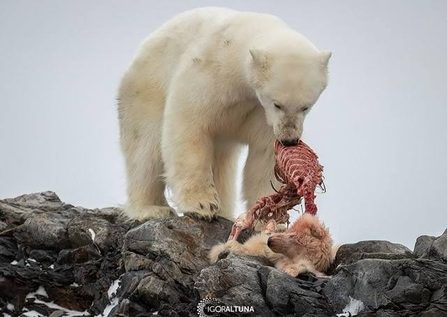

L'orso polare si nutre principalmente di:
In particolare di foche dagli anelli e foche barbute.
La tecnica di caccia, si adatta al suo habitat, consiste spesso nell'aspettare vicino ai fori presenti nel ghiaccio, attraverso
i quali le foche emergono per respirare.
Quando la preda arriva in superficie, l'orso la cattura grazie alle sue zampe potenti e ai suoi artigli.
La parte della foca che preferisce è il grasso, molto ricco di energia e fondamentale per mantenere il calore
corporeo e affrontare le temperature artiche.
Quando le foche scarseggiano, può nutrirsi anche di:
Talvolta, soprattutto durante i periodi di scarsità di cibo, mangia anche vegetali e bacche.
L'orso polare può trascorrere molto tempo senza mangiare, sopravvivendo grazie alle riserve di grasso
accumulate nel corpo.